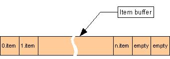

Array Class
Random container using one continuous reallocating buffer.
template <class Type>
class Array : public RandomContainer< Type >
Template parameters
- Type
-
Type of items the array stores.
Members
Constructors
Content management
| Swap |
Swaps content of two arrays.
|
Content query
| Enumerate |
Allows enumeration of the array's content.
|
| Begin |
Returns an iterator referring to the first item in the array.
|
| End |
Returns an iterator referring to the one past last item in the array.
|
Performance tuning
Public Types
| ConstIterator |
Type of the Array's constant random iterator.
|
| Iterator |
Type of the Array's random iterator.
|
Description
Array is a RandomContainer implementation that stores items in one continuous reallocating
memory buffer. It's public methods are non-virtual and are inline if appropriate.
Among random container implementations Array has the following advantages:
- It has the fastest item access (eg. operator[]).
- Imposes no storage overhead on items: total cost of an item storage cell is equal
to the physical size of an item.
- It rarely allocates memory and holds only one memory buffer.
- It has the smallest own size: currently 16 bytes.
Among random container implementations Array has the following disadvantages:
- It is reallocating so when a new item does not fit into the internal buffer a larger one is allocated and
all items are copied into the new buffer with copy constuctors, and that can be relatively slow.
Size of the new buffer will be twice as large as size of the old one. Reallocation may
also happen when items are deleted from the array to free the unused memory. This happens
when less (or equal) than quarter of the buffer is used. In such cases size of the new buffer
will be half of the old one (more precisely twice as large as is necessary).
- Insertion and deletion can be relatively slow because all items above the insertion or
deletion point are moved up or down by invoking assigment operators on items.
- Memory utilization can be bad. If a long sequence of insertions is considered then the
average fill factor of the internal buffer will be 75%, and the worst fill factor will be 50%.
If a long sequence of deletions is considered then average fill factor will be 37.5% and the
worst fill factor will be 25%.
- Due to its reallocating nature references to items can be stored only
until the next modifying operation on the array is invoked. (Note that location of items
may also change at insertions and deletions.)
Items are required to have default and copy constructors and assigment operator.
In addition if they have comparison operators (== and !=) then value dependent
operations (eg. Find, Count, Contains etc.) will be also useable.
The following figure shows the internal layout of the Array:

Requirements
Namespace: GS
Header: Array.hpp
See Also
PagedArray | StableArray
| ArrayFB< Type, BufferCapacity >